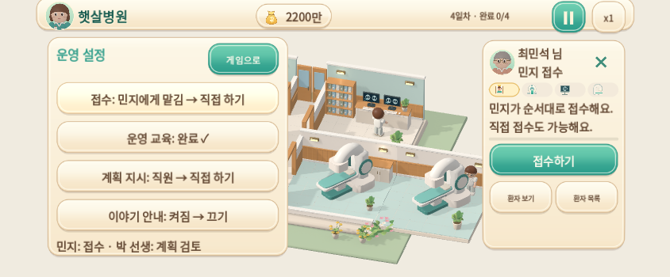
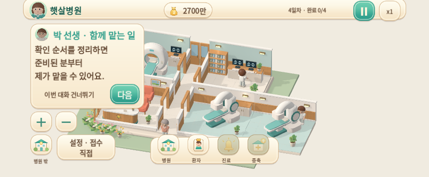
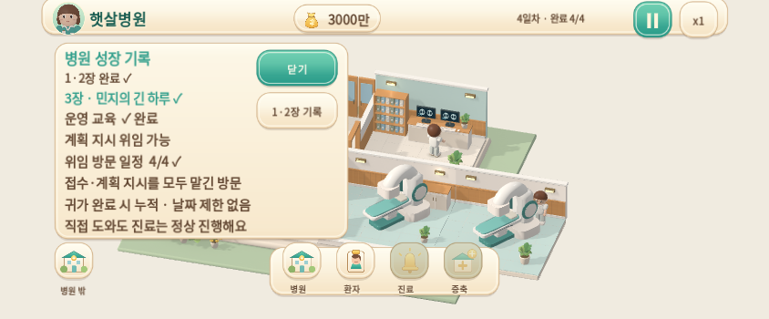
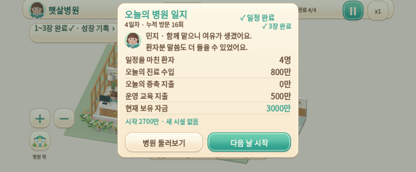

민지의 긴 하루
챕터 3 · 운영 교육 500만 · 사용자가 켜는 계획 지시 위임
0.5.0-dev · Godot 4.6.3 · 빌드 소스 e08a2b3
구현·검증·저장 이전·기획 차이 문서 · 검사 및 빌드 식별 기록
아래는 Linux 실제 Godot 실행입니다. 자동 입력 · 정상 1배속이며 Android/iPhone 실기기 영상이 아닙니다. 녹화 24fps는 휴대폰 게임 성능을 뜻하지 않습니다.
1. 교육 구매와 계획 위임 켜기 · 25초
민지와 박 선생의 제안 → 내용·가격 확인 → 교육 구매 → 별도 계획 지시 켜기. 접수 위임은 독립된 설정입니다.
2. 실제 자동 운영과 귀가 집계 · 85초
실제 도착 후 민지 접수 → 계획 지시 준비 3초 → 기존 검토 → 서로 다른 두 환자 치료 → 실제 귀가 후 위임 방문 증가. 중간 배속이나 업무 건너뛰기가 없습니다.
3. 챕터 완료와 다음 날·저장 복원 · 29초
4번째 위임 방문 귀가 → 3장 도장과 일지 → 성장 기록 → 5일차 → 같은 테스트 파일 저장·복원. 실제 프로세스 종료 후 재실행은 별도 수명주기 검사에서 확인했습니다.
작은 화면에서 확인
844×350 렌더링에 좌우 47·하단 21 픽셀 안전 영역을 모사했습니다. 실제 휴대폰 검증은 아직 필요합니다.

큰 버튼을 유지한 업무 관리와 환자 카드

기존 계획 담당 박 선생 · 박 원장과 별도 인물

실제 귀가 방문 4/4와 이전 챕터 기록

수입·증축비·교육비를 구분한 병원 일지
체험 순서
2장 완료 → 설정 → 운영 교육 500만 구매 → 계획 지시를 직원에게 맡기기. 접수도 민지에게 맡기면 두 업무가 자동으로 실행된 방문이 귀가할 때 누적됩니다. 직접 도와도 정상 진료·수입에는 영향이 없습니다.
Android는 기존 앱을 삭제하지 않고 APK를 업데이트합니다. Mac/iPhone은 Web ZIP을 KMH/05_게임의 새 폴더에 풀고 동봉된 실행 도우미를 사용합니다. 다운로드 경로·체크섬과 실제 기기 미확인 범위는 검토 문서에 있습니다.